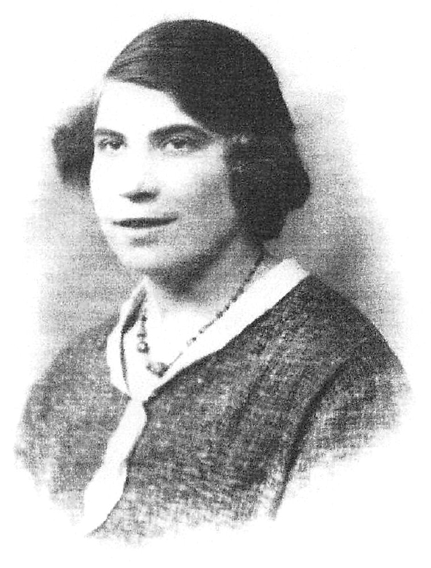
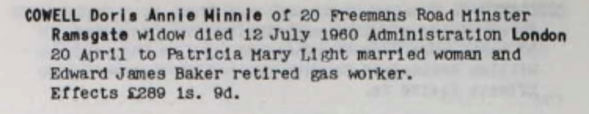
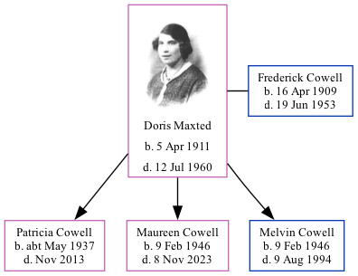

Doris Annie Minnie Cowell (née Maxted) 1911 - 1960
[ Home ] | [ Calendar ] | [ Surnames Index ] | [ Family History ]Doris Maxted, the wife of Frederick James Cowell (the uncle of Nigel Horne), was born in Ramsgate, Kent, England on Apr 5, 1911<span class="citation">1,2,3</span> and married Frederick (a truck driver with whom she had 3 children: <a href="I267.html">Patricia Mary</a>, <a href="I268.html">Maureen Joyce</a> and <a href="I269.html">Melvin James</a>) at St George's Church in Ramsgate on Mar 31, 1934<span class="citation">6</span>.</p><p>Throughout her life, she lived at 5 Pouces Cottages, Manston, Kent, England on Sep 29, 1939<span class="citation">1</span>; and on 20 Freeman's Road, Minster, Thanet, Kent in 1960. <p>She died on Jul 12, 1960 in Ramsgate<span class="citation">3,4,5</span> and was buried on Minster Cemetery, Tothill Street, Minster, Thanet, Kent after Jul 12, 1960<span class="citation">3</span>.
Children
- Patricia Mary was born c. May 1937
- Maureen Joyce was born on Feb 9, 1946
- Melvin James was born on Feb 9, 1946
Citations
- 1939 Register - Findmypast (was the wife of the head of the household)
- England & Wales, FreeBMD Birth Index, 1837-1915 Online publication - Provo, UT, USA: The Generations Network, Inc., 2006.Original data - General Register Office. England and Wales Civil Registration Indexes. London, England: General Register Office. © Crown copyright. Published by permission of the Cont
- UK and Ireland, Find A Grave Index, 1300s-Current Ancestry.com Operations, Inc.
- England & Wales Government Probate Death Index 1858-2019 - Findmypast
- England & Wales, Death Index: 1984-2005 Online publication - Provo, UT, USA: The Generations Network, Inc., 2007.Original data - General Register Office. England and Wales Civil Registration Indexes. London, England: General Register Office. © Crown copyright. Published by permission of the Cont
- England & Wales marriages 1837-2008 - Findmypast
Media
Dorris Maxted

Frederick Cowell - Doris Maxted - gravestone

Frederick James - Minnie Maxted - marriage

Doris Maxted - probate

Thanet Advertiser 3 Apr 1934

England & Wales marriages 1837-2008 - BMD/M/1934/1/AZ/000615/094
England & Wales deaths 1837-2007 - BMD/D/1960/3/AZ/000190/031
England & Wales births 1837-2006 - BMD/B/1911/2/AZ/000914/058
1939 Register Transcription - TNA-R39-1820-1820G-008-36
England & Wales Government Probate Death Index 1858-2019 - GBOR/GOVPROBATE/C/1961-1961/00050726
Family Tree
Generated by Ged2Site. Last updated on Jul 20, 2025